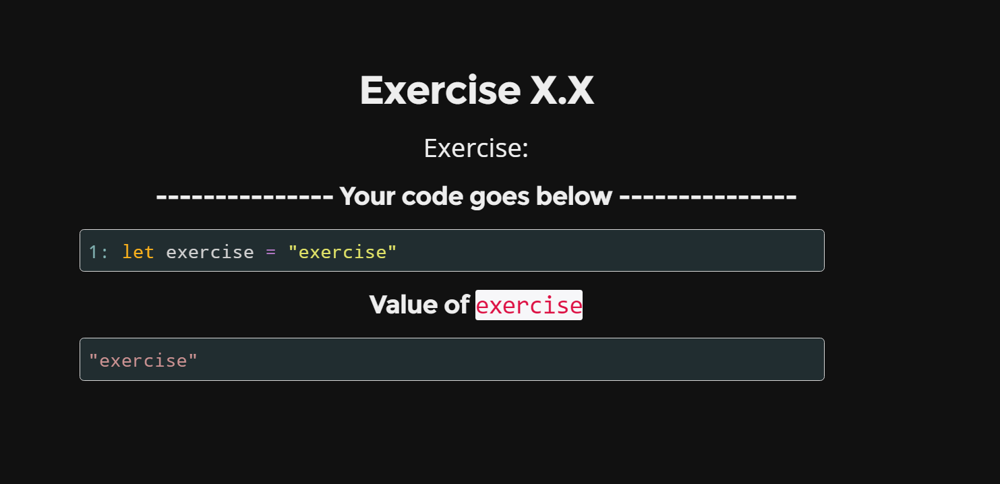

F# workshop in a browser
How to make a F# workshop for your colleagues more attractive? Let them edit your slides and interact with the browser! This entry presents an idea of using FsReveal to combine your presentation and workshop exercises into a single file.
The idea
I've once attended an awesome F# Coding Dojo conducted by Mathias Brandewinder (@brandewinder) in Łódź, Poland. It was titled "Introduction to Machine Learning with F#" and it came from the series of F# Coding Dojos powered by Community for F# (@c4fsharp).
Apart from the subject of this dojo was really interesting and the problem to solve quite exciting, one thing that I enjoyed most was the idea of Guided Script. It based on placing learning materials, short language reference and the actual code all within single script file, in a spirit of Literate Programming. The script used in "Introduction to Machine Learning with F#" looked like this. For those of you who haven't seen the scripts in action, I highly recommend to go check out rest of the Dojos.
Recently I've volunteered to lead a series of F# workshops at our company in Gdańsk. The main purpose of such series would be to introduce colleagues with C# background to world of F# and Functional Programming. In order to put emphasis on learning FP concepts and their practical use, I've decided to prepare the series from scratch by myself.
Because I wanted to make those meetings as attractive as possible, I planned to adapt the Guided Script format. In addition to that, I needed to prepare some slides to demonstrate and explain FP concepts. Choice of tool for the presentation was easy - many members of F# Community make use of FsReveal.
"FsReveal allows you to write beautiful slides in Markdown and brings C# and F# to the reveal.js web presentation framework".
Once I've realized that FsReveal allows to write slides in a standard F# script (.fsx) file, I came up with an idea to combine it with Guided Script.
Realization
FsReveal allows to edit slides interactively, which means that you can preview your changes live with help of a little Suave.IO server embedded into the build script. All you have to do is run KeepRunning target:
1:
|
|
This opens up generated slides in your browser, and fires a file change watcher in slides directory - whenever a change is detected, slides get regenerated and a WebSocket message is sent to the page in the browser with a command to reload itself.
This feature made it possible to treat the browser as an interactive REPL. Let's have a look at an example, this slide is backed up by following script code (valid F# syntax with Markdown format in comments):
1: 2: 3: 4: 5: 6: 7: 8: |
|

The workshop participant first runs the KeepRunning target of the build script.
Now whenever she modifies the script (e.g. binds a different value to exercise symbol) and saves the file, the page gets automatically refreshed with a new result.
One downside of this approach is that when the scripts gets a bit longer, its evaluation may take some time. Because of that if the file watcher discovers too frequent changes (programmer's habit - save a file every second), it might not keep up with regenerating new slides. Fortunately the participant can still run certain snippets of the code in the FSI (F# Interactive) for debugging purposes, and only when she's ready with the final implementation, trigger new slides to render.
Summary
The whole workshop extends this workflow, providing ten different exercises to complete for participants. By implementing the exercises step by step, the participant aims to the final goal which is calculating an arithmetic expression represented in Reverse Polish Notation.
All slides for the workshop are available here. Last week I conducted the workshop for the first time, and it went pretty well. Despite the fact the standard FSI turned out to be crucial anyway, participants appreciated the cool extra thing that they can watch their changes live in the browser. Till next time!
Full name: fworkshopinabrowser.exercise